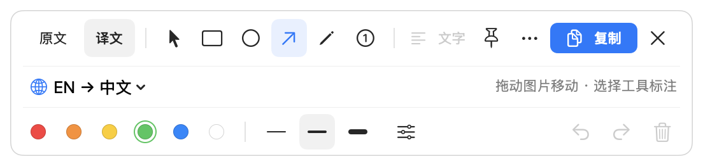

读懂文字，也看见全貌。
把译文放回截图，尽量保留原有位置、颜色与视觉层次。随时切回原文，重要细节不靠猜。
原文与译文，一键对照一段文字，一张图表，一个差点错过的细节。让内容留在眼前，让工具恰好在手边。
把译文放回截图，尽量保留原有位置、颜色与视觉层次。随时切回原文，重要细节不靠猜。
原文与译文，一键对照常驻菜单栏，一个快捷键唤起。框选正在阅读的区域，也能直接打开已有图片。
箭头、形状与编号保留在独立图层。标出重点，然后复制、保存，或钉在屏幕旁。

几个简单动作，
就在你工作的地方完成。
安装应用，输入 TR- 激活码，按指引开启屏幕录制权限，并选择翻译语言。
按 ⌃ ⌥ 2 拖出选区，也可以从启动面板直接打开已有图片。
用 Tab 对照原文。标出重点后，按 ⌘ C 复制、⌘ S 保存，或把图片钉在屏幕旁。
截图与文字识别在本机完成。可以使用 Apple 本机翻译，也可以连接兼容 OpenAI 的服务。模型模式仅将识别文字发送至你配置的接口，不上传截图。
官方应用需要 Transeen 专用 TR- 激活码。无需登录即可激活这台 Mac，也可绑定 iTool 账号，方便以后恢复。StupidMirror 与 iTool Pro 的激活码不通用。
一个原生的小工具，陪你读懂更多。
下载 TranseenmacOS 26+ · 需激活使用 · MIT 开源